韓国独自システム
| 決闘システム クライアント画面の多重起動可能 ユニークアイテムレンタルイベント ネットカフェ特典 オート申告システム |
復帰者出席チェック 経験の水晶玉 アイテム完全保護 探偵ランキング 青少年保護法 |
決闘システム
 |
システムメニューの「決闘拒否」のチェックを外しておけば、街以外のフィールドでいつでも決闘を申し込み・許可することができます。 |
 |
キャラクターをシフト+右クリックして 「決闘申込」を選択 |
 |
決闘は一対一で行われます。 |
 |
敗者には「敗北しました」のメッセージが表示されHP1の状態で座り込みます。 ペナルティは一切ありません。 サバイバル状態になるためやスキルの検証などに利用されています。 |
クライアント画面の多重起動可能
複数IDでの多重起動・同時プレイができるので、日本のようにVPCの設定が必要ありません。
ランチャーのオプション項目でバックグラウンド作業ONに設定すると、すべてのクライアント画面をリアルタイム表示することも可能です。
※IDの取得には韓国国民番号が必須なため、原則1人1IDしか持てません。
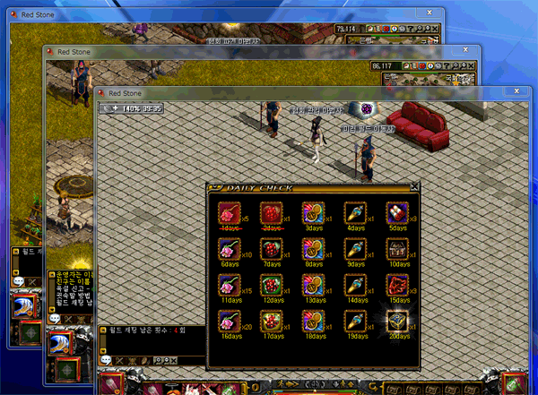
ユニークアイテムレンタルイベント
 |
古都ブルンネンシュティグのイベントNPCにて、 各種ユニークアイテムを低価格で24時間レンタルできるイベントが時々開催されます。 |
 |
レンタル可能なアイテムは、初心向けユニークアイテムやDXユニーク、伝説の武器などその時により様々あります。 日本でも金鯖で実施してくれたら育成が捗りますね。 |
 |
タートクラフトの婚約指輪 要求Lv30 |
| 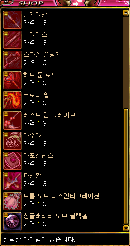 |
伝説の武器 |
| 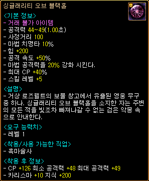 |
ブラックホール 要求Lv1 |
 |
12周年記念アイテム ダズンセレブシューズ/ダズンセレブリング ⇒ 韓国限定アイテム 防具 |
ネットカフェ特典
公認ネットカフェから接続すると、「PC」ボタンから「ネットカフェ特典」メニューウィンドウを開いて利用することができます。

[PC]武器特典
職業とLvに応じたユニークアイテム[PC]武器を受け取ることができます。
有効期限24時間、ネットカフェでのみ使用可能。
レベルが上がったり武器を破壊した場合は、再度受け取ることができます。
| Lv | 剣士用[PC]ユニークアイテム |
|---|---|
| 1〜199 | 薪割り斧[PC] |
| 200〜299 | アンドゥリル[PC] |
| 300〜399 | スパークセーバー[PC] |
| 400〜499 | ラヴァストーム[PC] |
| 500〜599 | チルドプロミネンス[PC] |
| 600〜699 | キャラバンアウトフィット[PC] |
| 700〜 | オプシディアンソード[PC] |
接続時間特典
ネットカフェに接続している時間により、合計4回特典BOXが支給されます。

| ネットカフェ特典BOX1 | ネットカフェ特典BOX2 | ネットカフェ特典BOX3 | |
|---|---|---|---|
| 接 続 時 間 |
30分 | 1時間 2時間 |
3時間 |
| 出 現 ア イ テ ム |
ランディスの手作り菓子 10個 ランディスの手作り菓子 5個 古代竜の心臓2個 古代竜の心臓 ミュータントフラワー15個 ミュータントフラワー30個 神秘石のかけら5個 発火石 断熱石 花火 ユニークアイテムチケット ファーストヒールポーション 風の羽 風の羽2個 |
神秘石 神秘石のかけら5個 修復済みタティリス遺跡の出土品 タティリス遺跡のかけら5個 ミュータントフラワー15個 ミュータントフラワー30個 古代竜の心臓 発火石 断熱石 花火 ユニークアイテムチケット 究極のユニークアイテムチケット ファーストヒールポーション 風の羽 風の羽2個 ランディスの手作り菓子 10個 ランディスの手作り菓子 5個 不思議な紺碧の壺 |
神秘石 神秘石のかけら10個 修復済みタティリス遺跡の出土品 タティリス遺跡のかけら10個 古代竜の心臓2個 ミュータントフラワー30個 古代竜の心臓 発火石 断熱石 花火 ユニークアイテムチケット 究極のユニークアイテムチケット 最高のユニークアイテムチケット 奇跡のユニークアイテムチケット ファーストヒールポーション 風の羽 風の羽2個 ランディスの手作り菓子 10個 ランディスの手作り菓子 20個 不思議な紺碧の壺 |
オート申告システム
マクロプレーが横行している韓国では、プレイヤー間の監視システムとしてオート申告システムがあります。
|
キャラクターをシフト+右クリックして「オート申告」を選択 |
 |
申告されたプレイヤーはテキスト画像を入力します。 180秒以内に正しく入力できなかった場合や、5回間違えると強制的に切断されます。 |
 |
正しく入力し疑いの晴れたキャラクターにはお詫びとして、 [お詫びの気持ち]バフが付与されます。 300秒間すべてのスキルレベル +1 回避/命中率 5％増加 |
復帰者出席チェック
復帰者が古都ブルンネンシュティグの風船商人に話すと、以下の4つのアイテムをもらうことができます。
・ ポータル・スフィアー[7日]
・ 試練のクリスタル
・ サムゲタン 30個 （3分間、HP/CP/防御力上昇）
･ 爆竜の心臓 10個
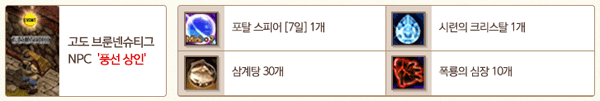
さらに復帰者限定の12日間出席チェックを受けると毎日、ソーラーチェリー、コスミックストーン、ポータルパワーキット[1時間]、ファインベリーなどが支給されます。
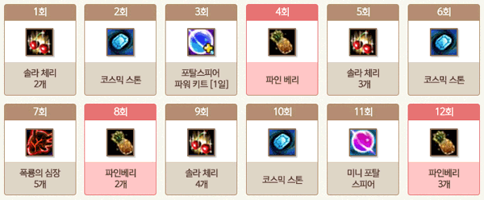
経験の水晶玉
 |
課金アイテム経験の水晶玉をインベントリに所持して狩りをすると、獲得した経験値の一定割合を蓄積します。 |
 |
蓄積した経験値が最大に達すると成長の泉が生成されます。 取引可能・銀行保管可能。 Lv800未満のキャラクターは実質、経験値を買うことができてしまうシステムです。 |
 |
束縛された経験の水晶玉からは成長の泉[取引不可]が生成されます。 |
 |
こちらは取引不可なので、自キャラクターの経験値を貯めておいて一気に上げたい時に使用します。 |
| アイテム | 最大累積値 | 蓄積率 | 価格 （ウォン） |
説明 | |
|---|---|---|---|---|---|
| 経験の水晶玉【青】 | 500万 | 10％ | 1000 | 成長の泉を生成 | |
| 経験の水晶玉【赤】 | 450万 | 30％ | 1500 | ||
| 経験の水晶玉【金】 | 1500万 | 30％ | 4500 | ||
| 束縛された経験の水晶玉【青】 | 500万 | 10％ | 400 | 成長の泉[取引不可] を生成 |
|
| 束縛された経験の水晶玉【赤】 | 450万 | 30％ | 700 | ||
| 束縛された経験の水晶玉【金】 | 1500万 | 30％ | 2000 | ||
| アイテム | 経験値 | 説明 | |
|---|---|---|---|
| 成長の泉 | 青い光 500万 赤い光 450万 黄金の光 1500万 |
取引可能 | |
| 成長の泉[取引不可] | 青い光 500万 赤い光 450万 黄金の光 1500万 |
取引不可 | |
アイテム完全保護
| 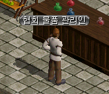 |
冒険家協会ブルンネンシュティグ本部の 協会物資管理人（52.26）にて |
| 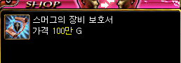 |
スマグの装備保護呪文書を100万Gで 購入することができます。 |
 |
スマグの装備保護呪文書 |
| 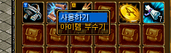 |
右クリックして「使用する」を選択 |
| 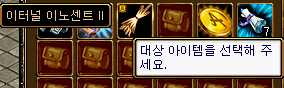 |
保護したいアイテムをクリックすると |
| 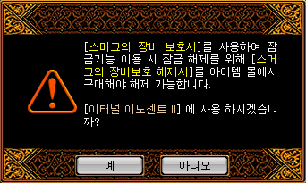 |
確認画面が表示され |
| 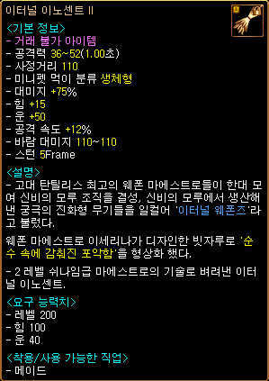 |
鍵マークが付き、完全保護されたアイテムとなります。 完全保護されたアイテムは売却不可・破壊不可・強化不可・保護解除不可。 |
 |
完全な保護を解除するには、課金アイテムスマグの装備保護解除書が必要となります。 |
探偵ランキング
韓国公式ページでは、RED STONE探偵の称号を持つ100人のランキングとRED STONEポイントが毎日更新されています。

青少年保護法
「※1時間後の午前0時から午前6時まで青少年保護法に基づいて満16歳未満の青少年と本人認証がされていないお客様は、接続が切断されます。ご了承お願い致します。」
23時になるとこのようなテロップが表示されます。
2013年に施行された韓国青少年保護法の第26条（深夜時間帯におけるインターネットゲーム提供時間の制限）に、「インターネットゲームの提供者は16歳未満の青少年に午前0時から午前6時までインターネットゲームを提供してはならない。」と定められているためです。
若年層のプレイヤーが多い韓国では0時以降にプレイしている人は少なく、0時発の秘密などもありません。